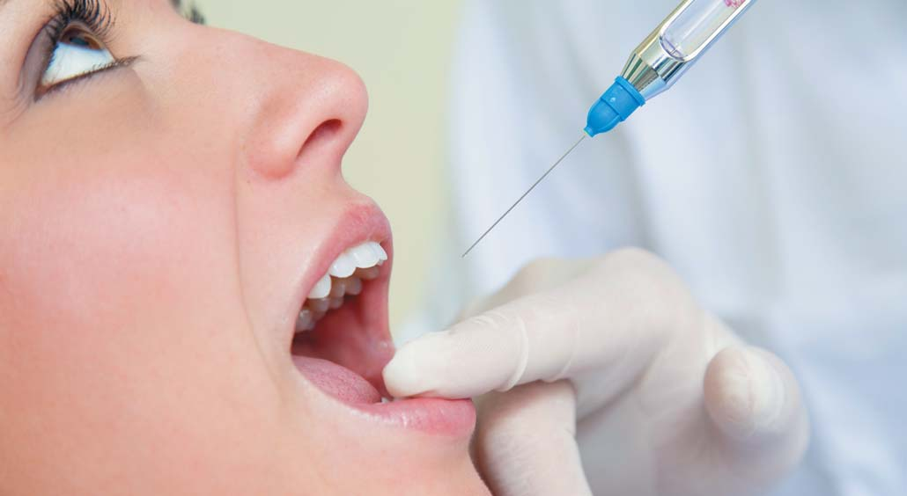
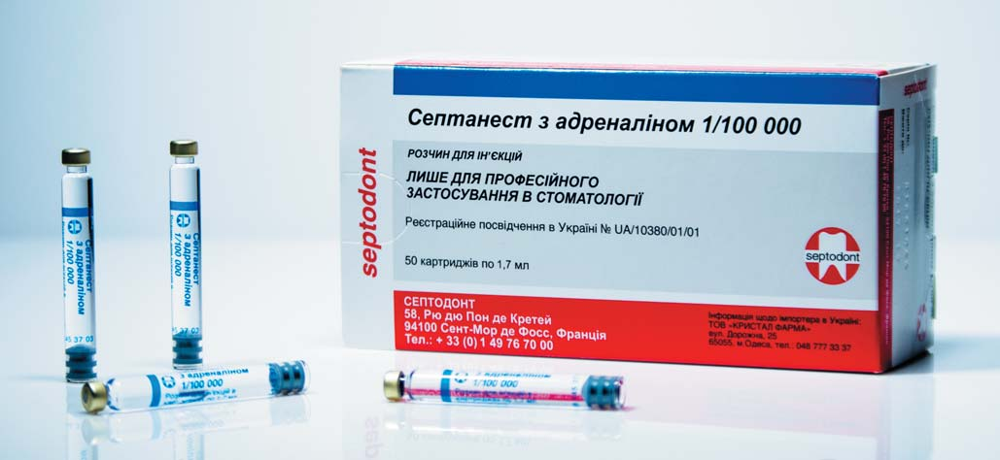
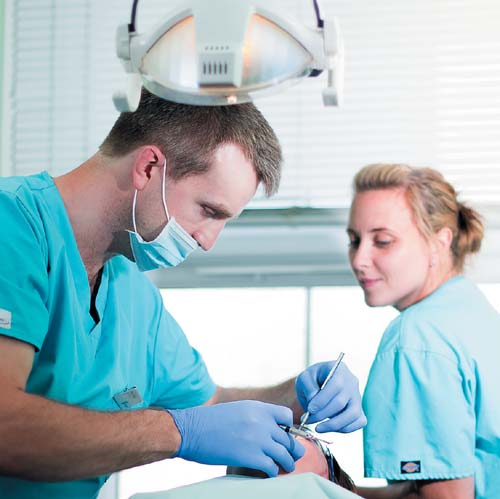
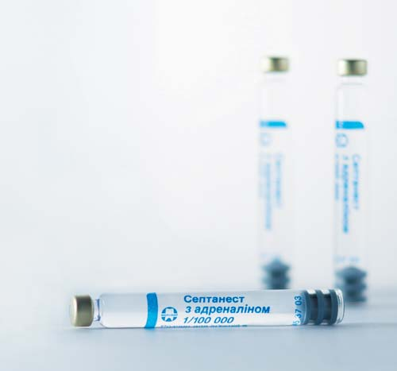
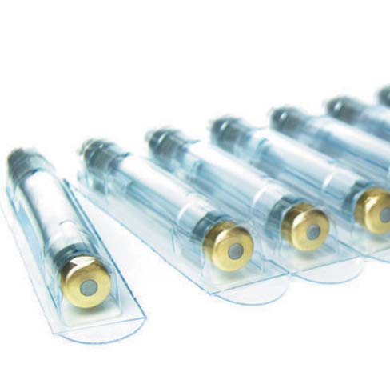

Практика · журнал «ДентАрт» 2017 №1
Ефективність місцевої анестезії при ендодонтичному лікуванні
THE EFFICIENCY OF LOCAL ANESTHESIA FOR ENDODONTIC TREATMENT
Присвячуючи весь свій робочий час клінічній ендодонтії, можу сказати, що приблизно у дев'яти випадках з десяти мені доводиться мати справу із нежиттєздатними зубами, в інших клінічних випадках — із зубами з незворотним пульпітом. Якщо говорити про місцеву анестезію, яка потрібна для препарування каріозної порожнини і розкриття порожнини зуба, то відмінності між зазначеними вище категоріями зубів більш ніж очевидні.

Причому часто пацієнти з некрозом пульпи цікавляться, для чого потрібен «цей приладик» (ідеться про електронний апекслокатор), який десь там пищить. Звичайно, стоматолог може і не вводити місцевий анестетик пацієнтові для лікування каналів, і тоді, якщо пацієнт скрикнув після просування кінчика файла за апекс, то можна припустити, що канал прохідний, і приблизно розрахувати робочу довжину. Я не використовую такий підхід, я прихильник введення ефективного місцевого анестетика для подальшого виконання всіх ендодонтичних маніпуляцій. Таким чином вдається мінімізувати післяопераційний больовий синдром на тривалий час після завершення фармакологічної дії препарату. У випадку ж із запаленою пульпою зазвичай мене просять щось зробити, оскільки багаторазові комплексні процедури для місцевого знеболювання не допомагають і пацієнт, як і раніше, скрикує. Тобто тут ми зустрічаємося з неправильно виконаною блокадою нижнього альвеолярного нерва мандибулярною анестезією.
Невдалі спроби досить глибоко ввести місцевий анестетик можуть збентежити, однак таке буває не так уже й рідко. У 1984 р. Kaufman і співавт. повідомили, що протягом 5 днів 13% стоматологів загального профілю не змогли правильно ввести місцевий анестетик, через що 10% процедур довелося припинити. Причому найчастіше не вдається зробити саме блокаду нижнього альвеолярного нерва. За результатами пізнішого дослідження, проведеного на території Великої Британії, показник невдало виконаної блокади нижнього альвеолярного нерва (лідокаїном) у групі пацієнтів з незворотним пульпітом був ще вищим — 32%.
Вивчивши варіанти місцевої анестезії, я, як і всі стоматологи, повинен обрати анестетик і техніку його введення. Зовсім недавно я відмовився від свого стандарту — 2% розчину лідокаїну з адреналіном у концентрації 1:80000 — і тепер надаю перевагу 4% розчину артикаїну з адреналіном у концентрації 1:100000. Я написав «надаю перевагу», тому що навіть коли у нас закінчилися запаси найкращого продукту компанії Septodont, я не скасовую візит, однак якщо є можливість вибрати, я завжди користуюся ампулами золотого кольору. Такий вибір я зробив, керуючись досвідом роботи та наявними даними клінічної звітності. Детально викласти свій досвід на сторінках журналу буде непросто, однак можна виділити деякі клінічні дані, опубліковані останнім часом.

Виявивши нові дані у стоматологічній літературі, треба дізнатися, звідки вони отримані. Оскільки методика проведення дослідження може позначитися на його якості, слід звертати увагу на ступінь надійності даних. Наприклад, результати ретельно продуманого рандомізованого контрольованого дослідження можуть виявитися надійнішим способом визначення ефективності порівняно з висновками фахівців, зробленими на підставі аналізу історій хвороби та ін. По можливості для прийняття рішення лікар повинен користуватися найбільш якісними даними, намагаючись не керуватися однією тільки методикою і не виключати всі дані, які були отримані в ході рандомізованого контрольованого дослідження. До цього правила ми ще повернемося, щоб з його допомогою обґрунтувати безпеку застосування артикаїну у стоматології.
У Німеччині розчин артикаїну вперше використали для виконання стоматологічної процедури у 1976 р., у Великій Британії — у 1998 р., у США — у 2003 р. Дуже гарний і детальний огляд щодо артикаїну опублікував у «Британському стоматологічному журналі» 2011 р. д-р Yapp. Згідно з оглядом, артикаїн — «найбезпечніший і найефективніший місцевий анестетик, який можна використовувати для виконання всіх стоматологічних маніпуляцій у клінічних умовах без обмеження за віком пацієнта, а його властивості аналогічні властивостям інших поширених місцевих анестетиків».
Систематичний огляд про ефективність та безпеку артикаїну в галузі стоматології за 2010 р. дозволив виконати мета-аналіз. Це гарний статистичний спосіб для сортування інформації та розгляду даних, отриманих у ході дев'яти окремих клінічних випробувань. За даними таких випробувань, артикаїн перевершує лігнокаїн за ефективністю знеболювання в зоні першого моляра і має аналогічні показники безпеки. Голова стоматологічного управління Комітету лікарських і терапевтичних засобів на території Великої Британії д-р John Meechan, вивчивши згадані вище дані, закликав виявляти обережність, оскільки на точність показників ефективності (але не безпеки) артикаїну може вплинути відсутність загальноприйнятого критерію, встановленого для порівняння результатів зазначених дев'яти досліджень і оцінки успішності виконання місцевого знеболювання.

У результаті швидкого пошуку інформації в літературі, розміщеній на ресурсі PubMed, з'ясувалося, що те саме питання безпеки використання артикаїну в стоматології (причому в літературі говориться, що артикаїн імовірно нейротоксичний) було порушено в аналізі лише кількох клінічних випадків, описаних д-ром Haas самостійно та у співавторстві. При цьому в галузі офтальмологічної хірургії та хірургії кінцівок, де також давно і часто використовується артикаїн, не було жодного відомого випадку парестезії. За даними окремих стоматологічних публікацій можна припустити, що ймовірність настання парестезії язикового нерва після блокади нижнього альвеолярного нерва артикаїном висока, однак не зазначено чому — якщо препарат нейротоксичний, ін'єкція не впливає на всі нерви однаково. Імовірно, артикаїн найчастіше впливає на язиковий нерв, структура якого аналогічна структурі інших периферійних нервів організму, причому лише у разі блокади нижнього альвеолярного нерва. Мені важко погодитися з тим, що сам собою артикаїн шкідливий, оскільки лише в небагатьох оглядах у всьому світі вказано на зв'язок між парестезією і використанням артикаїну для блокади нижньощелепного нерва за Гоу-Гейтсом, блокади різцевого або підборідного нерва, а також ін'єкцій як для інфільтрації, так і для блокади нервів зубів верхньої щелепи.
Ретроспективні дослідження, згідно з якими при використанні артикаїну висока ймовірність нейротоксичності, необ'єктивні, оскільки набір пацієнтів провадили проспективно, а не через те, що для складання остаточних клінічних рекомендацій надавали перевагу якісним даним. Сама лише наявність зв'язку не говорить про те, що ефект існує. І якщо Yapp вимагає провести додаткові рандомізовані контрольовані дослідження щодо артикаїну, щоб таким чином з'ясувати, чи обумовлене посилення парестезії застосуванням артикаїну, то Haas вважає, що «для виявлення статистично значущих відмінностей при такому рідкісному явищі, як парестезія без операції, потрібне надмірно масштабне дослідження або велика група піддослідних».

Оскільки поява будь-яких вагомих даних про несприятливі наслідки застосування артикаїну в стоматології малоймовірна, причому як найближчим часом, так і в принципі, можу припустити, що лікарі, в т. ч. і я, як і раніше, будуть надавати перевагу 4% розчину артикаїну і досить успішно ним користуватися без жодних побічних ефектів, не характерних для будь-якого іншого місцевого анестетика.
Якщо ж відкласти на якийсь час дослідження питань безпеки і вивчити наявну в літературі інформацію щодо ефективності методик ін'єкцій артикаїну, ми помітимо, що в ході ретельно розроблених досліджень було отримано досить багато даних про переваги артикаїну, зокрема у тих випадках, коли не вдалося виконати блокаду нижнього альвеолярного нерва лідокаїном.
Техніка виконання ін'єкції
Такі часто вживані і відомі всім стоматологам ін'єкції, як місцева інфільтрація і регіональна блокада, у більшості випадків діють, проте, як говорилося вище, блокада нижнього альвеолярного нерва не завжди знеболює клінічно нормальну пульпу, а якщо пульпа запалена, то кількість невдалих маніпуляцій приблизно у вісім разів більша. Докладне пояснення підвищеної опірності запаленої пульпи впливу місцевого анестетика не входить у межі цієї статті, але коротко можна сказати таке:
- Після введення в розчині місцевого анестетика спостерігається баланс позитивно заряджених (в дисоційованому стані) іонних форм і незаряджених молекулярних форм. У результаті запалення рН тканини знижується і більша кількість анестетика залишається у дисоційованому стані, за якого анестетик не може пройти через ліпідну мембрану нервової клітини і чинити вплив, аналогічний дії молекулярних форм.
- Посилений кровотік, що проходить через запалені тканини, швидше виводить введений препарат з необхідної ділянки.
- Місцевий анестетик з'єднується з натрієвими каналами, розташованими на мембрані нервових клітин, що передають біль (больових рецепторів), і деактивує їх. Такі «паралізовані» нервові клітини не здатні ініціювати та проводити нервовий імпульс. Таким чином, знеболювання виконане. Якщо тканини запалені, то на мембранах больових рецепторів виділяються в основному дещо інші натрієві канали, для деактивації яких потрібно трохи більше лідокаїну.
- У результаті потрапляння певних хімічних речовин у запалені тканини знижується порогова величина збудливості больових рецепторів, тому слід виконати блокаду більшої кількості клітин у межах ширшої ділянки.
Якщо не вдалося виконати блокаду, то можна або припинити лікування (за вказівками Kaufman, 1984), або все-таки спробувати зробити місцеву анестезію, тобто спробувати ще раз виконати блокаду нижнього альвеолярного нерва чи вдатися до одного зі способів місцевого знеболювання, описаних Meechan. Основними з таких способів є внутрішньокісткові і внутрішньозв'язкові ін'єкції. В одному з останніх досліджень розглянуто ефективність таких ін'єкцій, а також щічної інфільтрації артикаїну лише в такій ситуації. Медики, які знають, що сказав Альберт Айнштайн про божевілля («Божевілля — це виконання однієї і тієї ж дії зі сподіваннями на інший результат»), не будуть здивовані тим, що оптимальним способом місцевої анестезії після невдалої блокади нижнього альвеолярного нерва лідокаїном аж ніяк не є ще одна блокада лідокаїном. У такому випадку було отримано найнижчий результат — лише 32% випадків з клінічними симптомами оніміння пульпи. Оптимальним варіантом виявилася щічна інфільтрація артикаїну, завдяки якій вдалося знайти вихід із ситуації у 82% випадків, що перевищує показники внутрішньокісткових (68%) і внутрішньозв'язкових (48%) ін'єкцій. Такі можливості щічної інфільтрації артикаїну в зуб з незворотним пульпітом для продовження препарування порожнини доступу і виконання ендодонтичних маніпуляцій у більшості випадків, коли не допомогла блокада нижнього альвеолярного нерва за допомогою лідокаїну, також продемонстрував Matthews.

Не думаю, що подібна практика (щічної інфільтрації артикаїну для нижньощелепних зубів) поширена. Але, судячи з даних останніх ретельно розроблених досліджень, імовірно, така ситуація незабаром зміниться. При знеболюванні пульпи у здорових добровольців з'ясувалося, що щічна інфільтрація артикаїну не поступається за ефективністю блокаді нижнього альвеолярного нерва за допомогою лідокаїну і блокаді нижнього альвеолярного нерва за допомогою артикаїну. У ході окремих досліджень, проведених, зокрема, і за участю здорових добровольців, було встановлено, що ін'єкція лідокаїну зі щічною інфільтрацією артикаїну набагато ефективніша для знеболювання пульпи зуба нижньої щелепи, ніж сама лише блокада нижнього альвеолярного нерва або блокада нижнього альвеолярного нерва зі щічною ін'єкцією лідокаїну.
Якщо жоден зі способів не діє, я вдаюся до ще одного варіанту місцевого знеболювання — внутрішньопульпарної ін'єкції. Якщо немає можливості ретельно знеболити яку-небудь ділянку і якщо пацієнт дозволить виконати препарування вхідної порожнини так, щоб можна було зробити невеликий отвір у порожнину зуба, то в порожнину зуба можна ввести під тиском місцевий анестетик, який діє практично миттєво. Ця процедура більше механічна, ніж фармакологічна, оскільки фізіологічний розчин діє так само ефективно, як і лідокаїн.
Висновки
Сама по собі наявність картриджа із 4% розчином артикаїну в шприці не гарантує ретельного знеболювання, але цей засіб докорінно відрізняється від інших місцевих анестетиків групи амідів, таких як лігнокаїн та прилокаїн. Я його використовую регулярно, а у певних клінічних ситуаціях, наприклад при роботі з зубами із запаленою пульпою, вважаю незамінним, бо підвищена жиророзчинність і особливості молекулярної структури забезпечують потрапляння більшої кількості введеного препарату в нейрони, а оскільки артикаїн менш токсичний для організму, його можна використовувати у вищій концентрації у порівнянні з іншими місцевими анестетиками групи амідів.
Переклад Романа Бушуєва. Дозвіл на переклад і публікацію надала компанія Septodont.
Стаття надана ТОВ «Кристал Фарма» — офіційним представником компанії Septodont в Україні.